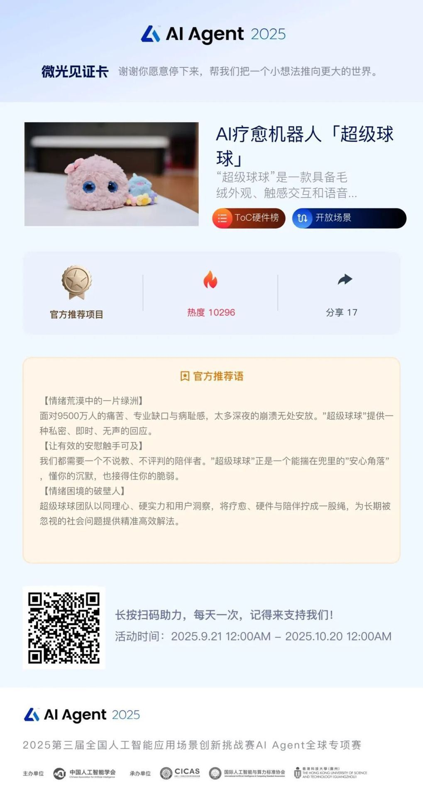

超级球球团队以同理⼼、硬实⼒和⽤⼾洞察，将疗愈、硬件与陪伴拧成⼀股绳，为⻓期被忽视的社会问题提供精准⾼效解法。
截⾄⽬前，“超级球球”项⽬在AI Agent 2025⼤赛的“ToC硬件榜”上暂居第3名，热度值为10296。
根据官⽅介绍，AI Agent 2025⼤赛，由中国⼈⼯智能学会主办，⽬前已有世界各地的1000多⽀顶尖AI团队报名。
“超级球球”团队于今年8⽉作为⼤赛“领航员计划”成员受邀参赛，并成为了“⼼灵修复师榜”榜主。
如果你喜欢“超级球球”，欢迎扫码为我们投⼀票助⼒👇
